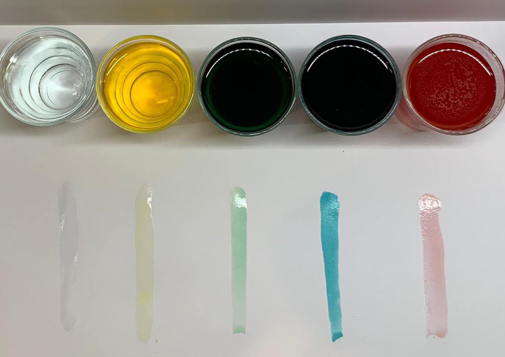

En esta ocasión le integré al drawdio una especie de agua/acuarela conductiva.
Para hacerla saqué 5 vasitos de mi cas y les puse diferentes cantidades de sal y a uno lo dejé vacío:
Después les puse agua caliente y colorante para diferenciarlos:

Después puse todos los cables donde correspondían:
Finalmente probé que funcionaran, acá me di cuenta que mis dedos producían el mismo sonido en cualquiera de los colores, pero al ponerme un guante de látex se notaba la diferencia, los que teníán menos o nada de sal eran los más agudos y los que tenían la mayor cantidad de sal eran los más graves, por último los quise probar como si fuesen acuarelas y hacer manchas con ellos.
Después quise darle un uso o hacer una performance y pensé en hacer un maquillaje conductivo y estaba súper motivada hasta que me acorde que nosotros también somos conductivos asi que no serviría un maquillaje de cara, por eso quise hacer mejor que los leds tiltilaran al escuchar un sonido, integrandole un micrófono (esto también pensando en aplicarlo en el pelo o cara al estar en algún ambiente musical), seguí un tutorial pero no me funcionó. Acá dejo evidencia: